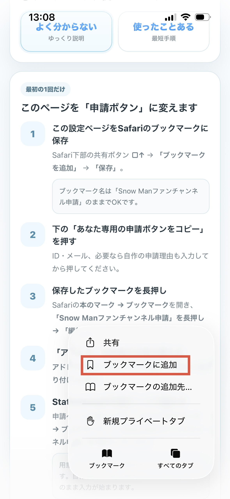

SNOW MAN × STATIONHEAD
Snow Manファンチャンネル申請 📮
申請入力をラクにするブックマークを、最初の1回だけ設定します。
このページは説明用なので、あとからいつでも見返せます。
📱 Xからこのページを開いた方へ
Xのアプリ内ブラウザのままだと、ブックマークを作れないことがあります。
いったんSafari / Chromeなどのブラウザで開いてから、下の設定を進めてください。
X内ブラウザの「…」メニューから、「Safariで開く」「Chromeで開く」「ブラウザで開く」などを選びます。表示名は端末によって少し異なります。
Xのアプリ内ブラウザのままだと、ブックマークを作れないことがあります。
いったんSafari / Chromeなどのブラウザで開いてから、下の設定を進めてください。
X内ブラウザの「…」メニューから、「Safariで開く」「Chromeで開く」「ブラウザで開く」などを選びます。表示名は端末によって少し異なります。
まずはここから
設定は別ページで行います
説明ページそのものを書き換えてしまわないように、登録作業だけ別ページに分けています。
設定ページには、ID・メール入力、申請理由の確認・自由入力、iPhone / iPad・Androidそれぞれの画像つき登録手順を載せています。
ブックマークって？
よく見るページを保存しておく機能です。今回はその仕組みを使って、Stationheadの申請欄をまとめて入力する「申請ボタン」を作ります。
設定の流れ
1
設定ページを開く
Stationhead IDと、Stationheadの登録時に使っているメールアドレスを入力します。
2
申請理由を確認
登録ページでは申請理由の例文を確認できます。例文を使う場合は、実際の申請時に3つから選びます。自分で書いた文章を使いたい場合だけ、登録ページであらかじめ入力します。
3
設定ページをブックマークして編集
共有メニューから「ブックマークに追加」を選んで保存します。そのあと、保存した「Snow Manファンチャンネル申請」を長押し → 編集。アドレス欄をコピーした申請ボタンに貼り替えます。


4
Stationheadの申請ページで実行
申請ページを開いたまま、Safariのブックマークから「Snow Manファンチャンネル申請」をタップします。

例文を使う場合は、その場で1つ選択。

入力後は内容を確認してSubmit。
うまくいかないとき
FAQ
まずは当てはまるものを開いて確認してください。
Xから開いたら、ブックマークを作れません
Xのアプリ内ブラウザのままだと、ブックマークを作れないことがあります。
X内ブラウザの「…」メニューから、 「Safariで開く」「Chromeで開く」「ブラウザで開く」などを選び、 Safari / Chromeでこのページを開き直してから設定してください。
X内ブラウザの「…」メニューから、 「Safariで開く」「Chromeで開く」「ブラウザで開く」などを選び、 Safari / Chromeでこのページを開き直してから設定してください。
ブックマークを押しても、この設定ページが開くだけです
ブックマークのアドレス / URL欄が、申請ボタンのコードに置き換わっていない可能性があります。
設定ページで「あなた専用の申請ボタンをコピー」→ 保存済みの「Snow Manファンチャンネル申請」を編集 → アドレス / URL欄を全部消して貼り直してください。
名前欄ではなく、アドレス / URL欄を変更します。
設定ページで「あなた専用の申請ボタンをコピー」→ 保存済みの「Snow Manファンチャンネル申請」を編集 → アドレス / URL欄を全部消して貼り直してください。
名前欄ではなく、アドレス / URL欄を変更します。
「申請理由を選んでください」が出ません
自分で書いた申請理由を登録している場合は正常です。
その場合、3択は表示されず、登録した文章でそのまま入力が始まります。
自作理由を登録していないのに何も起きない場合は、 ブックマークのアドレス / URL欄が正しく貼り替わっているか確認してください。
自作理由を登録していないのに何も起きない場合は、 ブックマークのアドレス / URL欄が正しく貼り替わっているか確認してください。
ブックマークを押しても何も起きません
Stationheadの申請ページを開いた状態で申請ボタンを実行してください。
iPhone / iPadはSafariのブックマークから 「Snow Manファンチャンネル申請」をタップします。
AndroidはChromeのアドレスバーに 「Snow Manファンチャンネル申請」と入力し、 候補に出る★付きのブックマークを選びます。
それでも動かない場合は、設定ページから申請ボタンをもう一度コピーして、 ブックマークのアドレス / URL欄を貼り直してください。
iPhone / iPadはSafariのブックマークから 「Snow Manファンチャンネル申請」をタップします。
AndroidはChromeのアドレスバーに 「Snow Manファンチャンネル申請」と入力し、 候補に出る★付きのブックマークを選びます。
それでも動かない場合は、設定ページから申請ボタンをもう一度コピーして、 ブックマークのアドレス / URL欄を貼り直してください。
Androidでブックマークを編集したあと「保存」が見つかりません
Android版Chromeでは、今回の編集画面に「保存」ボタンがない場合があります。
URL欄に申請ボタンを貼り付けたら、そのまま元の画面へ戻って大丈夫です。
URL欄に申請ボタンを貼り付けたら、そのまま元の画面へ戻って大丈夫です。
Stationが途中までしか追加されません / 1局だけ抜けます
Stationは1局ずつ順番に追加しています。
「Stationを追加しています」表示が消えるまでは、画面を触らず待ってください。
現在の申請ボタンは、各Stationが追加されたことを確認してから次へ進みます。 追加を確認できない場合は、そのStation名を示すメッセージが出ます。
その場合は画面を確認し、表示されたStation以降を手動で追加してください。 最後に、以下の7局が入っているか確認してください。
snowmanfan9sima / snowmandream / chochan6969 / whatsolike / sn9support / snowman9flash / snowind
現在の申請ボタンは、各Stationが追加されたことを確認してから次へ進みます。 追加を確認できない場合は、そのStation名を示すメッセージが出ます。
その場合は画面を確認し、表示されたStation以降を手動で追加してください。 最後に、以下の7局が入っているか確認してください。
snowmanfan9sima / snowmandream / chochan6969 / whatsolike / sn9support / snowman9flash / snowind
完了メッセージが出ました。もうSubmitしていいですか？
完了メッセージは、入力できる項目を埋め、Stationの追加確認まで終わったという意味です。
そのまま送信せず、Stationheadのフォームを一度確認してください。 特に、ID・メールアドレス・申請理由・Spotifyプレイリスト・7局のStationが入っているかを確認し、 問題なければSubmit Requestを押してください。
そのまま送信せず、Stationheadのフォームを一度確認してください。 特に、ID・メールアドレス・申請理由・Spotifyプレイリスト・7局のStationが入っているかを確認し、 問題なければSubmit Requestを押してください。
メールアドレスはどれを入れればいいですか？
Stationheadの登録時に使っているメールアドレスを入力してください。
あなた専用の申請ボタンにはIDとメールアドレスが組み込まれるため、
コピーしたコードやブックマークのアドレス / URLは他の人に共有しないでください。
ID・メール・自作の申請理由をあとから変更したいです
ブックマーク自体を作り直す必要はありません。
設定ページをもう一度開いて新しい内容を入力 → 「あなた専用の申請ボタンをコピー」→ 保存済みブックマークのアドレス / URL欄を新しいコードに貼り替えれば更新できます。
設定ページをもう一度開いて新しい内容を入力 → 「あなた専用の申請ボタンをコピー」→ 保存済みブックマークのアドレス / URL欄を新しいコードに貼り替えれば更新できます。
3つの申請理由の文章を確認してから使いたいです
設定ページの「申請理由に入る文章を見る」を開くと、
3つの英文を事前に確認できます。
例文を使う場合は、実際の申請時に3つから選べます。 自分で文章を書きたい場合は、設定ページの自由入力欄に登録できます。
例文を使う場合は、実際の申請時に3つから選べます。 自分で文章を書きたい場合は、設定ページの自由入力欄に登録できます。
あとで内容を変えたいとき
ID・メール・申請理由を書き直したいときは、この説明ページから設定ページを開き直して新しい申請ボタンをコピーします。メールアドレスを変更する場合も、Stationheadで現在使っているものを入力してください。保存済みブックマークのアドレスを貼り替えるだけで更新できます。